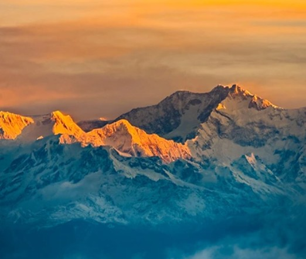
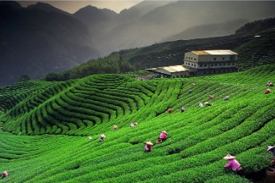
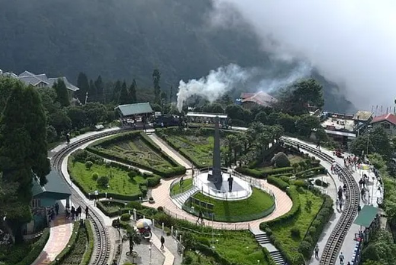

Darjeeling, known as the "Queen of Hills", is a beautiful hill station in West Bengal, India. It is famous for its tea gardens, breathtaking views of the Himalayas, and the majestic Kanchenjunga mountain. The cool climate and scenic beauty make it one of the best tourist destinations in India.

Famous for its sunrise view over Mount Kanchenjunga.

Experience the world-famous Darjeeling tea plantations.

A beautiful railway loop with stunning mountain views.
Best time to visit: March to May and October to December.
Don’t miss the Darjeeling Himalayan Railway toy train ride!